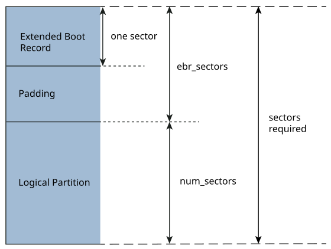

Configuration file for diskimage
The diskimage utility requires a configuration file that specifies the disk image layout and content.
For the full grammar of the configuration file, see
Grammar.
The diskimage utility also supports short type names for some GUID partitions.
The contents of the diskimage configuration file must conform to the following grammar, which is defined using a BNF-like notation.
# Configuration file
config_file : disk_cfg* ( partn_def | raw_def )*
# Disk configuration
disk_cfg : '[' disk_attr+ ']'
# Disk attributes
disk_attr : 'cylinders' '=' uint
| 'heads' '=' uint
| 'sectors_per_track' '=' uint
| 'sector_size' '=' uint
| 'num_sectors' '=' uint
| 'align' '=' uint
| 'start_at_cylinder' '=' uint
# Partition definition
partn_def : primary_partn_def
| extended_partn_def
| logical_partn_def
# Primary partition definition
primary_partn_def :
'[' 'partition' '=' partn_idx ppartn_attr* ']' [partn_file]
# Extended partition definition
extended_partn_def :
'[' 'extended' '=' partn_idx epartn_attr* ']'
# Logical partition definition
logical_partn_def :
'[' 'logical' lpartn_attr* ']' [partn_file]
# Partition index
partn_idx : uint
# The primary partition attributes
ppartn_attr : boot_attr
| type_attr
| type_guid_attr
| nsec_attr
| name_attr
| required_attr
| noblock_attr
# The extended partition attributes
epartn_attr : nsec_attr
# The logical partition attributes
lpartn_attr : boot_attr
| type_attr
| nsec_attr
| esec_attr
# The boot attribute
boot_attr : 'boot' '=' bool
# The type attribute
type_attr : 'type' '=' uint
# The type_guid attribute
type_guid_attr : 'type_guid' '=' type_guid_name
| 'type_guid' '=' type_guid_guid
# The num_sectors attribute
nsec_attr : 'num_sectors' '=' uint
# The ebr_sectors attribute
esec_attr : 'ebr_sectors' '=' uint
# The name attribute
name_attr : 'name' '=' gpt_partn_name
# The 'required' attribute
required_attr : 'required' '=' bool
# The noblock attribute
noblock_attr : 'noblock' '=' bool
# Partition file
partn_file : string
# GUID name
type_guid_name : string
# GUID
type_guid_guid : guid
# The raw section definition
raw_def :
'[' 'raw' start_lba_attr num_lba_attr']' raw_file
# The start_lba attribute
start_lba_attr : 'start_lba '=' number
# The num_lba attribute
num_lba_attr : 'num_lba' '=' number
# The file_name attribute
raw_file : '"'file_name'"'
# The boolean definition
bool : 'true'
| 'false'
# Unsigned integer
uint : '0' odigit* sfx?
| '0x' xdigit+ sfx?
| [1-9] ddigit* sfx?
# Octal digits
odigit : [0-7]
# Decimal digits
ddigit : [0-9]
# Hexadecimal digits
xdigit : [0-9a-fA-F]
# Factors that can be used with integers
sfx : [kKmMgGtTpP]
# String values must be enclosed within double quotes ("")
string : '"' [^"]* '"'
# A GUID
guid :
'{' xdigit{8} '-' xdigit{4} '-' xdigit{4} '-' xdigit{4} '-' xdigit{12} '}'
Unless the diskimage output goes to a disk device, you must specify a disk configuration in the configuration file. The disk configuration is made up of disk attributes, most of which describe the disk's geometry. All disk attribute definitions must be enclosed in square brackets ([]). A single pair of brackets can contain one or more attribute definitions; multiple attribute definitions within a pair of brackets must be separated by whitespace.
Disk attributes
In the partition configuration, you can specify the following kinds of partitions: primary, extended, and logical. These partition definitions must comply with the following conditions:
Using extended and logical partitions.
Grammar):
... primary_partn_def : '[' 'partition' '=' partn_idx ppartn_attr* ']' [partn_file] extended_partn_def : '[' 'extended' '=' partn_idx epartn_attr* ']' logical_partn_def : '[' 'logical' lpartn_attr* ']' [partn_file] ...where:
Grammar.
Partition Attributes
Partition informationand http://en.wikipedia.org/wiki/GUID_Partition_Table.
Using extended and logical partitions
If you want to use logical partitions, you must also define exactly one extended partition. It can be defined explicitly or created automatically by diskimage. The extended partition acts as a primary partition and serves as a container for the logical partitions. Within the extended partition, the logical partitions are laid out in the order in which they appear in the configuration file.

By default, the ebr_sectors option is set to the disk's number of sectors per track (i.e., exactly one track). The ebr_sectors value includes the EBR as well as any padding sectors. We recommend that you use the default value of one track.
<sectors_per_track> /* First logical EBR */ + <logical-type-179> /* First logical data */ + <sectors_per_track> /* Second logical EBR */ + <logical-type-178> /* Second logical data */ = ext_sectors
32 /* sectors_per_track */ + 2048 /* First logical data */ + 32 /* sectors_per_track */ + 6144 /* Second logical data */ = 8256 /* size of extended partition sectors */
[cylinders=16 heads=32 sectors_per_track=32] [partition=1 boot=true type= 11 num_sectors=4096] "fat.img" [extended=2 num_sectors=8256] [logical boot=false type=179 num_sectors=2048] "qnx-179.img" [logical boot=false type=178 num_sectors=6144] "qnx-178.img"
[cylinders=16 heads=32 sectors_per_track=32] [partition=1 boot=true type=11] "fat.img" [logical type=179] "qnx-179.img" [logical type=178] "qnx-178.img"
The following tables list the GUID partition types for which diskimage has a defined short type name.
You can use any of the listed types in a partition declaration by specifying the string in the Type Name
column as the value of the type_guid partition attribute.
For types not listed, you must specify the full GUID.
General
| Type Name | GUID | Description |
|---|---|---|
| unused | 00000000-0000-0000-0000-000000000000 | Unused entry |
| mbr | 024DEE41-33E7-11D3-9D69-0008C781F39F | Nested MBR |
| bios | 21686148-6449-6E6F-744E-656564454649 | BIOS Boot |
| gpfs | 37AFFC90-EF7D-4E96-91C3-2D7AE055B174 | IBM General Parallel File System (GPFS) |
| lenovo | BFBFAFE7-A34F-448A-9A5B-6213EB736C22 | Lenovo Boot Partition |
| efi | C12A7328-F81F-11D2-BA4B-00A0C93EC93B | EFI System Partition (ESP) |
| iffs | D3BFE2DE-3DAF-11DF-BA40-E3A556D89593 | Intel Fast Flash (iFFS) Partition (Intel Rapid Start) |
| sony | F4019732-066E-4E12-8273-346C5641494F | Sony Boot Partition |
QNX
| Type Name | GUID | Description |
|---|---|---|
| qnx6 | CEF5A9AD-73BC-4601-89F3-CDEEEEE321A1 | Power-Safe filesystem (fs-qnx6.so) |
| qtd | F3885E7F-09B1-4075-8CEF-1244534F95BC | QNX Trusted Disk (fs-qtd.so) |
| qtsafefs | FF3C6142-3C54-4C27-A2A7-7631A58E1320 | QNX Trusted File System for Safety |
Windows
| Type Name | GUID | Description |
|---|---|---|
| ldmm | 5808C8AA-7E8F-42E0-85D2-E1E90434CFB3 | Logical Disk Manager (LDM) Metadata |
| ldmd | AF9B60A0-1431-4F62-BC68-3311714A69AD | Logical Disk Manager Data |
| msrec | DE94BBA4-06D1-4D40-A16A-BFD50179D6AC | Windows Recovery Environment |
| mswin | E3C9E316-0B5C-4DB8-817D-F92DF00215AE | Microsoft Reserved Partition (MSR) |
| strgsp | E75CAF8F-F680-4CEE-AFA3-B001E56EFC2D | Storage Spaces Partition |
| ms | EBD0A0A2-B9E5-4433-87C0-68B6B72699C7 | Microsoft Basic Data Partition (BDP), for any kind of FAT, exFAT, or NTFS filesystem |
Apple (Mac OS X)
| Type Name | GUID | Description |
|---|---|---|
| aboot | 426F6F74-0000-11AA-AA11-00306543ECAC | Apple Boot Partition |
| hfs | 48465300-0000-11AA-AA11-00306543ECAC | Apple HFS/HFS+ |
| albl | 4C616265-6C00-11AA-AA11-00306543ECAC | Apple Label Partition (Disklabel) |
| araid | 52414944-0000-11AA-AA11-00306543ECAC | Apple RAID Partition |
| aoraid | 52414944-5F4F-11AA-AA11-00306543ECAC | Apple RAID Partition, offline |
| atvr | 5265636F-7665-11AA-AA11-00306543ECAC | Apple TV Recovery Partition |
| acs | 53746F72-6167-11AA-AA11-00306543ECAC | Apple Core Storage (Lion FileVault) Partition |
| aufs | 55465300-0000-11AA-AA11-00306543ECAC | Apple UFS |
| azfs | 6A898CC3-1DD2-11B2-99A6-080020736631 | Apple ZFS |
Ceph
| Type Name | GUID | Description |
|---|---|---|
| cedm | 45B0969E-9B03-4F30-B4C6-5EC00CEFF106 | Ceph dm-crypt Encrypted Journal |
| cejour | 45B0969E-9B03-4F30-B4C6-B4B80CEFF106 | Ceph Journal |
| ceosd | 4FBD7E29-9D25-41B8-AFD0-062C0CEFF05D | Ceph OSD |
| cedmosd | 4FBD7E29-9D25-41B8-AFD0-5EC00CEFF05D | Ceph dm-crypt OSD |
ChromeOS
| Type Name | GUID | Description |
|---|---|---|
| chrsrvd | 2E0A753D-9E48-43B0-8337-B15192CB1B5E | ChromeOS Future Use |
| chroot | 3CB8E202-3B7E-47DD-8A3C-7FF2A13CFCEC | ChromeOS Rootfs |
| chkrnl | FE3A2A5D-4F32-41A7-B725-ACCC3285A309 | ChromeOS Kernel |
FreeBSD
| Type Name | GUID | Description |
|---|---|---|
| fbdata | 516E7CB4-6ECF-11D6-8FF8-00022D09712B | FreeBSD Data Partition |
| fbswap | 516E7CB5-6ECF-11D6-8FF8-00022D09712B | FreeBSD Swap Partition |
| fbufs | 516E7CB6-6ECF-11D6-8FF8-00022D09712B | FreeBSD Unix File System (UFS) |
| fblvm | 516E7CB8-6ECF-11D6-8FF8-00022D09712B | FreeBSD-LVM (Vinum) Volume Manager Partition |
| fbzfs | 516E7CBA-6ECF-11D6-8FF8-00022D09712B | FreeBSD ZFS Partition |
| fbboot | 83BD6B9D-7F41-11DC-BE0B-001560B84F0F | FreeBSD Boot Partition |
Haiku
| Type Name | GUID | Description |
|---|---|---|
| hbfs | 42465331-3BA3-10F1-802A-4861696B7521 | Haiku BFS |
HP-UX
| Type Name | GUID | Description |
|---|---|---|
| hpuxlvm | 75894C1E-3AEB-11D3-B7C1-7B03A0000000 | HP-UX-LVM Data Partition |
| hpuxsvc | E2A1E728-32E3-11D6-A682-7B03A0000000 | HP-UX Service Partition |
Linux
| Type Name | GUID | Description |
|---|---|---|
| lnxswap | 0657FD6D-A4AB-43C4-84E5-0933C84B4F4F | Linux Swap Partition |
| lnxdata | 0FC63DAF-8483-4772-8E79-3D69D8477DE4 | Linux Filesystem Data |
| lnxsrv | 3B8F8425-20E0-4F3B-907F-1A25A76F98E8 | Linux /srv (server data) |
| dmcrypt | 7FFEC5C9-2D00-49B7-8941-3EA10A5586B7 | Plain dm-crypt Partition |
| lnxrsrv | 8DA63339-0007-60C0-C436-083AC8230908 | Linux Reserved |
| lnxhome | 933AC7E1-2EB4-4F13-B844-0E14E2AEF915 | Linux /home Partition (systemd) |
| lnxraid | A19D880F-05FC-4D3B-A006-743F0F84911E | Linux RAID Partition |
| lnxluks | CA7D7CCB-63ED-4C53-861C-1742536059CC | Linux LUKS Partition |
| lnxlvm | E6D6D379-F507-44C2-A23C-238F2A3DF928 | Linux Logical Volume Manager (LVM) |
MidnightBSD
| Type Name | GUID | Description |
|---|---|---|
| mbufs | 0394EF8B-237E-11E1-B4B3-E89A8F7FC3A7 | Unix File System (UFS) Partition |
| mbdata | 85D5E45A-237C-11E1-B4B3-E89A8F7FC3A7 | Data Partition |
| mbswap | 85D5E45B-237C-11E1-B4B3-E89A8F7FC3A7 | Swap Partition |
| mbvin | 85D5E45C-237C-11E1-B4B3-E89A8F7FC3A7 | Vinum volume manager Partition |
| mbzfs | 85D5E45D-237C-11E1-B4B3-E89A8F7FC3A7 | ZFS Partition |
| mbboot | 85D5E45E-237C-11E1-B4B3-E89A8F7FC3A7 | Boot Partition |
NetBSD
| Type Name | GUID | Description |
|---|---|---|
| nbcat | 2DB519C4-B10F-11DC-B99B-0019D1879648 | Concatenated Partition |
| nbcrypt | 2DB519EC-B10F-11DC-B99B-0019D1879648 | Encrypted Partition |
| nbswap | 49F48D32-B10E-11DC-B99B-0019D1879648 | Swap Partition |
| nbffs | 49F48D5A-B10E-11DC-B99B-0019D1879648 | FFS Partition |
| nblfs | 49F48D82-B10E-11DC-B99B-0019D1879648 | LFS Partition |
| nbraid | 49F48DAA-B10E-11DC-B99B-0019D1879648 | RAID Partition |
OpenBSD
| Type Name | GUID | Description |
|---|---|---|
| obdata | 824CC7A0-36A8-11E3-890A-952519AD3F61 | OpenBSD Data Partition |
Solaris
| Type Name | GUID | Description |
|---|---|---|
| sboot | 6A82CB45-1DD2-11B2-99A6-080020736631 | Boot Partition |
| sroot | 6A85CF4D-1DD2-11B2-99A6-080020736631 | Root Partition |
| sswap | 6A87C46F-1DD2-11B2-99A6-080020736631 | Swap Partition |
| susr | 6A898CC3-1DD2-11B2-99A6-080020736631 | /usr Partition |
| sbkup | 6A8B642B-1DD2-11B2-99A6-080020736631 | Backup Partition |
| srsvd | 6A8D2AC7-1DD2-11B2-99A6-080020736631 | Reserved Partition |
| svar | 6A8EF2E9-1DD2-11B2-99A6-080020736631 | /var Partition |
| shome | 6A90BA39-1DD2-11B2-99A6-080020736631 | /home Partition |
| altsctr | 6A9283A5-1DD2-11B2-99A6-080020736631 | Alternate sector (EFI_ALTSCTR) |
| srsvd1 | 6A945A3B-1DD2-11B2-99A6-080020736631 | Reserved Partition 1 |
| srsvd2 | 6A96237F-1DD2-11B2-99A6-080020736631 | Reserved Partition 2 |
| srsvd3 | 6A9630D1-1DD2-11B2-99A6-080020736631 | Reserved Partition 3 |
| srsvd4 | 6A980767-1DD2-11B2-99A6-080020736631 | Reserved Partition 4 |
The raw attribute can be used to copy data (e.g., IPLs) to areas on the disk that aren't covered by any partition.
Since raw data sections aren't part of any partition, they aren't included in the partition table. However, the diskimage utility makes sure that the defined raw sections don't overlap with any of the defined partitions or with any partition-table metadata.
The diskimage utility supports the following raw data attributes:
[raw start_lba=1024 num_lba=16] "generated/ipl-foo"
Configuration file for three primary partitions
[cylinders=974] [heads=255] [sectors_per_track=63] # DOS FAT32 [partition=1 boot=false type=11 num_sectors=963837 ] "../fsi/fat32.fsi" # First Power-Safe filesystem, >2GB, bootable [partition=2 boot=true type=179 num_sectors=4273290 ] "../fsi/qnx6-1.fsi" # Second Power-Safe filesystem [partition=3 boot=false type=178 num_sectors=1060290 ] "../fsi/qnx6-2.fsi"
Configuration file for three primary and two logical partitions
[cylinders=4096 heads=64 sectors_per_track=32] # DOS FAT32 (~480MB) [partition=1 type=11 num_sectors=963837] "../fsi/fat32.fsi" # Primary Power-Safe filesystem, >2GB, bootable [partition=2 boot=true type=179 num_sectors=4273290] "../fsi/qnx6-1.fsi" [extended=3] # Reserved for Power-Safe filesystem [partition=4 type=178 num_sectors=65536] # Power-Safe filesystem (~500MB) [logical type=178 num_sectors=1060290] "../fsi/qnx6-2.fsi" # Power-Safe filesystem (~500MB) [logical type=177 num_sectors=1060290] "../fsi/qnx6-3.fsi"
Configuration file for a GPT disk with two partitions
[cylinders=64k heads=32 sectors_per_track=16]
# At 512 bytes/sector, 2k sectors give 1MB
[align=2k]
# DOS FAT32
[partition=1
type_guid="ms"
name="dos"
num_sectors=2097108
] "../fsi/fat32.fsi"
# Power-Safe filesystem, bootable
[partition=128
boot=true
type_guid="qnx6"
name="qnx"
num_sectors=4273290
] "../fsi/qnx6.fsi"